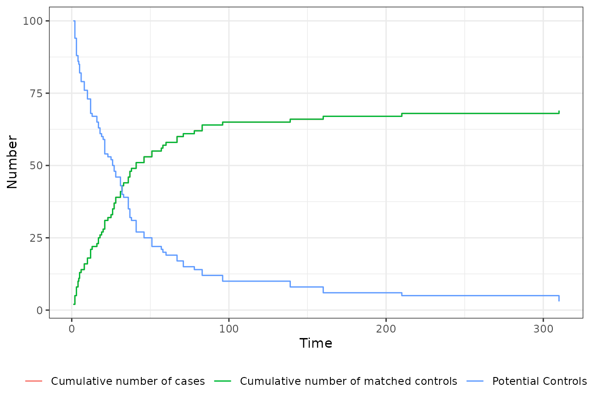

An Introduction to Time-Dependent Matching with MatchTime
Robin Denz
Source:vignettes/MatchTime.rmd
MatchTime.rmdIntroduction
Time-dependent matching is a very versatile method to perform causal inference based analysis with longitudinal data. In this type of matching, individuals who switch from “control” to the “treatment” at some point in time are matched to one or more (usually similar) individuals who are still under “control” conditions at . This point in time is then used as the “baseline” or “time-zero” for all individuals included in this way. The time from this artificial inclusion time until the occurrence of some time-dependent event is then usually used as an outcome, mimicking a prospective randomized controlled trial with staggered entry of participants (Thomas et al. 2020). There are multiple different versions of time-dependent matching that follow these general principles, such as balanced risk set matching (Li et al. 2001), time-dependent propensity score matching (Lu 2005), time-dependent prognostic score matching (Hansen 2008; He et al. 2020), time-dependent double-score matching (He et al. 2020) and time-dependent greedy matching (Gran et al. 2010). More information about the methods themselves is given in the documentation pages and the cited literature. To get a general overview, we also highly recommend the excellent review article by Thomas et al. (2020).
The MatchTime package aims to implement all forms of
time-dependent matching for binary treatment variables in a consistent
fashion. The package is designed to be as similar as possible to the
MatchIt package (Ho et al. 2011), which is probably the
most widely used piece of software to conduct regular matching (without
time-dependent treatments). In fact, since most time-dependent matching
methods require regular matching at each considered point in time, the
MatchTime package has built-in support for
MatchIt (Ho et al. 2011) and all of its’ functionality.
This vignette gives a first small introduction to the general workflow
when using MatchTime.
An Example: The Stanford Heart Transplant Program
To better illustrate the features of this package, we will re-analyze
real data that is publicly available. In particular, we will use the
heart dataset from the famous survival R
package here. Contrary to other packages implementing forms of
time-dependent matching, the MatchTime package requires the
input data to be in the start-stop format. This
means that for each individual, all information should be encoded in
form of time intervals in which the value of the included covariates
does not change. This allows users to perform the matching in discrete
and continuous time, without any need for equally spaced times of
measurement. A more detailed explanation is given in the documentation
pages and the associated vignette (see
vignette("creating_start_stop_data", package="MatchTime")).
The heart dataset can be accessed using:
data("heart", package="survival")This dataset has been pre-processed to be in the start-stop format and contains information of 103 patients on the waiting list for the Stanford heart transplant program (Crowley and Hu 1977). The first few rows of the data look like this:
head(heart)## start stop event age year surgery transplant id
## 1 0 50 1 -17.155373 0.1232033 0 0 1
## 2 0 6 1 3.835729 0.2546201 0 0 2
## 3 0 1 0 6.297057 0.2655715 0 0 3
## 4 1 16 1 6.297057 0.2655715 0 1 3
## 5 0 36 0 -7.737166 0.4900753 0 0 4
## 6 36 39 1 -7.737166 0.4900753 0 1 4In this dataset, the columns called start and
stop are used to define the right-open time-intervals,
while the id column is used to identify which rows belong
to which individual. The event column contains the binary
event indicator that is 0 if no event occurred and 1 if an event
occurred exactly at the stop value. Additionally, the
dataset contains four covariates, age (the age of the
individual in years - 48 years), the year of acceptance (in
years after the first November 1967), surgery (whether the
person had a prior bypass surgery) and whether the person received a
transplant or not.
Here, individual with id = 1 has never received a
transplant and experienced an event after 50 time units.
Since no covariate values change for this person, he or she only has one
row in the dataset. The individual with id = 4 on the other
hand received a transplant at
and experienced an event three time units later at
with no other covariate changes inbetween. He or she therefore occupies
two rows in this dataset.
For exemplary purposes, we will use the transplant
variable as the treatment we are interested in and will consider the
three other covariates (age, years and
surgery) as confounders. We will pretend that the goal is
to estimate the causal effect of the transplant on the
event. Since transplant is a binary
time-varying variable and the dataset is already in the required format,
this is a neat example to introduce the capabilities of
MatchTime. The results should, however, not be taken too
seriously as the analysis is only performed for pedagogical
purposes.
Performing the Matching
We can perform balanced risk set matching using nearest neighbor
matching at each point in time using the following
match_time() call:
set.seed(12345)
m_out <- match_time(transplant ~ age + surgery,
id="id",
outcomes="event",
data=heart,
method="brsm",
match_method="nearest",
replace_over_t=TRUE)
m_out## A match_time object
## - method: balanced risk set matching
## - match-method: 1:1 nearest neighbor matching (using matchit())
## - controls: Replacing controls only over time
## - cases: Using all cases
## - number of obs.: 103 (original), 138 (matched)
## - target estimand: ATT
## - covariates: age, surgeryHere, we first set a seed for the pseudo-random number generator to
make the results replicable. This is required, because the selection of
controls is based on randomness. Afterwards we can directly call the
main function of this package to do the matching for us. The
formula argument is used to define what parts of
data should be matched. We define the treatment variable by
putting it on the LHS of the formula and the confounders to be matched
on by putting them on the RHS. Since there are multiple rows per person,
we also have to tell the function how to identify these persons using
the id argument. Additionally, we use the
outcomes argument to specify which variables should be
coded as time-to-event outcomes to allow an easier analysis later.
Next, the method argument controls the time-dependent
matching method, which is set to balanced risk set matching (Li
et al. 2001) here, while the match_method argument
specifies the actual matching algorithm used when matching controls to
the cases at each point in time. Here we set
match_method="nearest", which means that nearest neighbor
matching, as implemented in MatchIt::matchit() will be
used. Finally, we set replace_over_t=TRUE to allow controls
to be re-used over multiple points in time. Note that, similar to
matchit(), each method may have additional
arguments or caveats that are documented in their own documentation
page.
Inspecting and Visualizing the Matching Process
Because the match_time() function basically does
everything automatically, it might be difficult to understand what
exactly actually happened at first. Luckily, the MatchTime
package includes multiple functions to visualize the matching process
and the results.
First, it always makes sense to take a look at the number of matches
and controls throughout the matching process. This can be done easily
using the plot.match_time() function:
plot(m_out)
In addition to the cumulative number of cases over time and the
cumulative number of matched controls over time, it also includes the
number of potential controls that would have been available at
.
Note that if you use the inclusion argument, this number
might not be non-increasing over time. Here we can see that the majority
of the matching was done in the first 100 time units. Only few
individuals were matched later. We can also see that the number of cases
and controls is exactly the same over the entire time, which means that
we always found a control for a case (remember that we used 1:1 matching
here).
Next, we may also create a flowchart to describe the matching process
more succintly. This can also be done easily, using the
plot_flowchart() function:
plot_flowchart(m_out)In this case, we started with the full set of 103 individuals. All of
them received the transplant after
,
so they could have theoretically been used as a control at some point in
time (e.g. they are “potential controls”). Only 69 of these individuals
ever received the transplant, meaning we had 69 potential
cases that we could try to match. Since we did not define any inclusion
criteria, there was no further subsetting here. The algorithm was able
to match a control to all of these individuals. We therefore end up with
69 cases and 69 matched controls. Note that in this case, because we set
replace_over_t=TRUE, 17 individuals were selected as
control more than once, while 63 individuals were never selected. If we
had set replace_over_t=FALSE, some individuals would not
have gotten a control, because of the different lenghts of follow-up
time.
We can further visualize the exact time-intervals included for each
person by using the plot_timeline() function. Below we show
the included time-lines for the first 7 individuals who were selected
into the matching process.
plot_timeline(m_out, include=c(1, 2, 3, 4, 5, 6, 7),
id_type="id")Here we can see that individuals with id %in% c(2, 5, 6)
were never selected, whereas id = 4 was selected as control
twice and included as a case (for a very short amount of time).
Inspecting Covariate Balance
If we rely solely on the matching process to achieve the covariate
balance at baseline (e.g. we do not plan any further covariate
adjustments), it is crucial to inspect whether this covariate balance
between the groups was actually achieved. A first look can be gained
using the summary.match_time() method:
summary(m_out)## Call:
## match_time(formula = transplant ~ age + surgery, data = heart,
## id = "id", outcomes = "event", method = "brsm", replace_over_t = TRUE,
## match_method = "nearest")
##
## Summary of Balance for Matched Data at Baseline:
## Means Treated Means Control Std. Mean Diff. Var. Ratio eCDF Mean
## age -1.9667292 -3.0001686 0.11643458 0.7293539 0.02242926
## year 3.5988850 3.5364700 0.03530218 0.9351385 0.02601711
## surgery 0.1884058 0.1449275 0.11118740 NA 0.04347826
## eCDF Max
## age 0.07246377
## year 0.08695652
## surgery 0.04347826
##
## Sample Sizes:
## Controls Treated All
## Matched 69 69 138
## Unmatched 19 0 19
## Included 103 69 103
## Supplied 103 69 103
##
## Points in Time:
## Matching was performed at 43 unique points in time between 1 and 310.We could also use the excellent cobalt package to obtain
similar statistics in a more organized fashion:
## Balance Measures
## Type Diff.Un V.Ratio.Un KS.Un OVL.Un
## age Contin. 0.1164 0.7294 0.0725 0.0465
## year Contin. 0.0353 0.9351 0.0870 0.0269
## surgery Binary 0.0435 . 0.0435 0.0435
##
## Sample sizes
## FALSE TRUE
## All 69 69Or present the results in form of a love.plot():
love.plot(m_out)Note that both bal.tab() and love.plot()
only show the balance statistics for the adjusted data here. This is in
contrast to how these functions work when used on regular
matchit objects created using
MatchIt::matchit(). The reason for this discrepancy is,
that without the time-dependent matching there is no “baseline” or other
natural point in time to use in order to get values for an “unadjusted”
covariate balance. This is not an issue though, since we are usually
only interested in judging whether the covariate balance is sufficient
after adjustment anyways. In this particular case, the covariate balance
seems fine.
Analyzing Matched Data
The m_out$data object of our previously created
match_time object already constitutes an almost finished
dataset that might be tempting to use for further analysis. In many
cases this is not a problem. It is, however, safer and thereby
recommended to use the get_match_data() function instead to
get the output data:
m_data <- get_match_data(m_out)This is similar to the get_matches() or
match_data() functions from the MatchIt
package (although using a different name to avoid name conflicts). It
automatically removes all unmatched individuals and returns the entire
dataset as needed for further analysis. The first few rows of the output
look like this:
head(m_data)## Key: <id>
## id .id_new .id_pair .treat .treat_time .next_treat_time .weights
## <num> <int> <char> <lgcl> <num> <num> <num>
## 1: 1 72 36 FALSE 27 NA 1
## 2: 3 1 1 TRUE 1 NA 1
## 3: 4 10 5 FALSE 2 36 1
## 4: 4 64 32 FALSE 23 36 1
## 5: 4 89 45 TRUE 36 NA 1
## 6: 7 107 54 TRUE 51 NA 1
## age year surgery event_status event_time
## <num> <num> <num> <lgcl> <num>
## 1: -17.155373 0.1232033 0 TRUE 23
## 2: 6.297057 0.2655715 0 TRUE 15
## 3: -7.737166 0.4900753 0 FALSE 34
## 4: -7.737166 0.4900753 0 FALSE 13
## 5: -7.737166 0.4900753 0 TRUE 3
## 6: 2.869268 0.7802875 0 TRUE 624A detailed description about the contents of each column is given in
the ?match_time documentation page. This final dataset may
now be analyzed using standard analysis techniques for time-to-event
endpoints. For example, we could plot standard Kaplan-Meier curves:
A similarly popular alternative would be a Cox proportional hazards model:
mod <- coxph(Surv(event_time, event_status) ~ .treat + strata(.treat_time), data=m_data)
summary(mod)## Call:
## coxph(formula = Surv(event_time, event_status) ~ .treat + strata(.treat_time),
## data = m_data)
##
## n= 138, number of events= 67
##
## coef exp(coef) se(coef) z Pr(>|z|)
## .treatTRUE -0.1755 0.8390 0.3398 -0.517 0.605
##
## exp(coef) exp(-coef) lower .95 upper .95
## .treatTRUE 0.839 1.192 0.431 1.633
##
## Concordance= 0.543 (se = 0.069 )
## Likelihood ratio test= 0.27 on 1 df, p=0.6
## Wald test = 0.27 on 1 df, p=0.6
## Score (logrank) test = 0.27 on 1 df, p=0.6Here we can see a hazard ratio that is smaller than 1, indicating a slight protective effect of the transplantation on the event probability, although this hazard ratio of course has a rather large confidence interval.
Going Further
This vignette is only meant to give a brief overview of the workflow and capabilities of the package. It therefore deliberately left out some important considerations, such as the target estimand, censoring schemes and caveats when analyzing the data. It also only showcases one kind of time-dependent matching. Please consult the documentation and the other vignettes of this package for further information.
Literature
Thomas, Laine E., Siyun Yang, Daniel Wojdyla, and Douglas E. Schaubel (2020). “Matching with Time-Dependent Treatments: A Review and Look Forward”. In: Statistics in Medicine 39, pp. 2350-2370.
Li, Yunfei Pail, Kathleen J. Propert, and Paul R. Rosenbaum (2001). “Balanced Risk Set Matching”. In: Journal of the American Statistical Association 96.455, pp. 870-882.
Lu, Bo (2005). “Propensity Score Matching with Time-Dependent Covariates”. In: Biometrics 61.3, pp. 721-728.
Hansen, Ben B. (2008). “The Prognostic Analogue of the Propensity Score”. In: Biometrika 95.2, pp. 481-488.
He, Kevin, Yun Li, Panduranga S. Rao, Randall S. Sung, and Douglas E. Schaubel (2020). “Prognostic Score Matching Methods for Estimating the Average Effect of a Non-Reversible Binary Time-Dependent Treatment on the Survival Function”. In: Lifetime Data Analysis 26, pp. 451-470.
Gran, Jon Michael, Kjetil Røysland, Marcel Wolbers, Vanessa Didelez, Jonathan A. C. Sterne, Bruno Ledergerber, Hansjakob Furrer, Viktor von Wyl, and Odd O. Aalen (2010). “A Sequential Cox Approach for Estimating the Causal Effect of Treatment in the Presence of Time-Dependent Confounding Applied to Data from the Swiss HIV Cohort Study”. In: Statistics in Medicine 29, pp. 2757-2768.
Ho, Daniel, Kosuke Imai, Gary King and Elizabeth A. Stuart (2011). “MatchIt: Nonparametric Preprocessing for Parametric Causal Inference”. In: Journal of Statistical Software 42.8.
Crowley, John and Marie Hu (1977). “Covariance Analysis of Heart Transplant Survival Data”. In: Journal of the American Statistical Association 72.357, pp. 27-36.